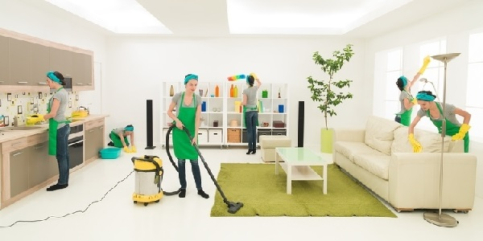
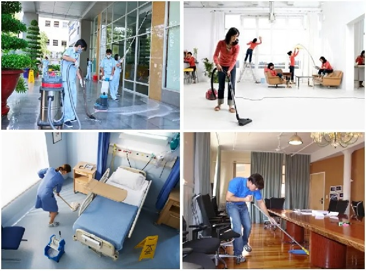
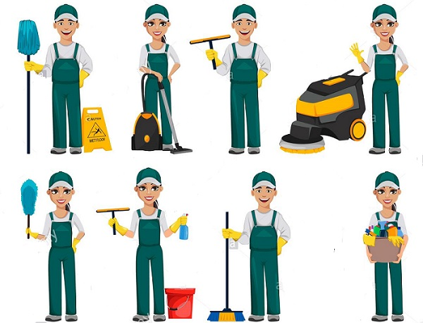
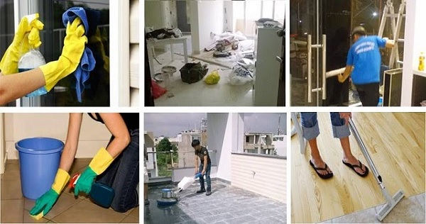

Vệ sinh công nghiệp là gì? Quy trình vệ sinh như thế nào?
Vệ sinh công nghiệp là một lĩnh vực quan trọng đối với những môi trường làm việc hiện đại và các ngành công nghiệp. Nhưng vậy, khái niệm vệ sinh công nghiệp là gì? Tại sao nó lại đóng một vai trò quan trọng đối với sự an toàn và hiệu suất của môi trường công nghiệp? Trong bài viết này, chúng ta sẽ tìm hiểu sâu hơn về khái niệm này và quy trình của nó.
Vệ sinh công nghiệp là gì?
Vậy vscn là gì? Đây có thể được hiểu là sự kết hợp giữa vệ sinh thông thường và vệ sinh hiện đại. Đó là quá trình kết hợp giữa việc làm sạch, dọn dẹp bằng tay và sử dụng các thiết bị, máy móc hiện đại như máy lau sàn công nghiệp, cùng với việc sử dụng hóa chất chuyên dụng và các phương pháp xử lý hiện đại… (tùy theo sự phát triển). Mục tiêu của vệ sinh công nghiệp là đảm bảo môi trường sạch sẽ và an toàn, nhằm mang lại lợi ích tối đa cho con người. Việc này đem lại nhiều tiện ích quan trọng cho cuộc sống hiện đại, bao gồm tiết kiệm thời gian và tiền bạc, cũng như tạo ra môi trường sống và làm việc tiện nghi và an toàn để cung cấp cho bạn cơ hội tập trung vào các hoạt động cá nhân, chăm sóc gia đình và bản thân, từ đó mang lại lợi ích cho chính bạn và xã hội.
**Xem ngay: Máy hút bụi công nghiệp công suất lớn cho vệ sinh nhà xưởng
Mục đích vệ sinh công nghiệp
Khi có nhu cầu vệ sinh lớn, hoạt động này giúp thực hiện mục tiêu vệ sinh nhanh chóng hơn và trên diện tích lớn trong thời gian ngắn. Điều này đảm bảo rằng các dịch vụ vệ sinh được cung cấp bởi các công ty hoặc bộ phận chuyên trách sẽ được thực hiện hiệu quả. Tính chất công nghiệp của quá trình này đem lại giá trị cải thiện và đáp ứng nhu cầu, tương tự như các cải cách công nghiệp khác.
Tên gọi của hoạt động này cũng thể hiện cách thức thực hiện và sự hiệu quả của nó. Hiện nay, vệ sinh công nghiệp trở nên quen thuộc trong nhu cầu của người dùng và thường được thực hiện bởi các tổ chức chuyên cung cấp dịch vụ. Các máy móc công nghiệp có thể hoạt động liên tục trong nhiều giờ và chi phí cho các thiết bị càng hiện đại càng cao.
Vệ sinh công nghiệp mang lại môi trường sống và làm việc sạch sẽ và an toàn cho sức khỏe của con người. Điều này tạo điều kiện thuận lợi để họ tập trung vào việc chăm sóc bản thân và gia đình mình, giảm bớt những công việc khó khăn và không thú vị. Đây cũng mang lại lợi ích cho cả cá nhân và xã hội.

Đối tượng của vệ sinh công nghiệp
Các đối tượng liên quan đến nghiên cứu và ứng dụng trên máy móc đa dạng. Tùy thuộc vào nhu cầu của khách hàng và gói dịch vụ vệ sinh mà họ lựa chọn, các công việc vệ sinh sẽ thay đổi để phù hợp với từng tình huống cụ thể. Điều này dựa trên đặc điểm riêng của không gian cần vệ sinh, cũng như tính chất đặc thù của máy móc và hóa chất được sử dụng, thể hiện rõ trong yêu cầu về vệ sinh thực tế.
Ngày nay, máy móc công nghiệp được sản xuất hàng loạt với công nghệ tiên tiến, đáp ứng nhu cầu vệ sinh trên nhiều loại không gian khác nhau. Các loại công trình bao gồm:
♦ Các công trình công nghiệp như cao ốc văn phòng, tòa nhà, khách sạn, nhà hàng, nhà máy, xưởng sản xuất, nhà xưởng, khu chế biến… Máy móc đảm bảo vệ sinh sàn, cửa kính, và các nhiệm vụ khác.
♦ Các công trình cá nhân như biệt thự, căn hộ, khu vườn cây cảnh… Máy móc tỉa cây cảnh được sử dụng để thúc đẩy tính thẩm mỹ, cùng với việc đảm bảo sạch sẽ và làm mới không gian.
Từng loại công trình này có những yêu cầu riêng biệt, và vệ sinh công nghiệp đáp ứng mọi nhu cầu từ việc sáng bóng và làm sạch đến việc tạo ra môi trường thẩm mỹ và sức khỏe.

Các trang thiết bị được sử dụng trong vệ sinh công nghiệp
Các dụng cụ và thiết bị chuyên dụng phục vụ cho công tác bảo dưỡng và vệ sinh công nghiệp bao gồm:
- Máy làm sạch sàn cao cấp: Được thiết kế đặc biệt để chà sạch bề mặt sàn, loại bỏ các vết bẩn cứng đầu.
- Xe quét: Dùng để làm sạch các vụn và vết bẩn trên mặt đường một cách nhanh chóng và hiệu quả.
- Máy đánh bóng sàn: Sử dụng để đánh bóng và mài nhẵn các bề mặt sàn, đặc biệt là sàn đá hoa cương.
- Máy chà nền kết hợp: Hỗ trợ trong việc chà sạch và hút khô bụi và vết bẩn trên các bề mặt sàn cứng.
- Máy hút nước, hút bụi: Dùng để làm khô và hút sạch bụi và nước sau khi làm sạch sàn.
- Máy phun rửa có áp lực cao: Sử dụng để làm sạch những khu vực khó tiếp cận và đánh bay vết bẩn sâu bên trong.
- Máy giặt sấy thảm, sofa: Thiết bị chuyên dụng để vệ sinh thảm và sofa, giúp duy trì chất lượng và làm sạch hiệu quả.
Các công cụ và dụng cụ phổ biến được sử dụng trong vệ sinh công nghiệp:
- Dụng cụ làm sạch sàn: Bao gồm chổi, cây chà sàn, gạt nước, phục vụ việc làm sạch sàn, tường và các khu vực khác như bếp.
- Thiết bị vệ sinh môi trường: Bao gồm biển cảnh báo vùng cần vệ sinh, chổi đánh bóng sàn, cọ vệ sinh, khăn lau sạch, thảm, thùng và túi rác, cùng với gạt tàn.
Các hóa chất thường xuyên được sử dụng
Các loại hóa chất thường được sử dụng trong vệ sinh công nghiệp bao gồm:
- Hóa chất làm sạch nhà cửa: Gồm thuốc tẩy sàn chuyên dụng, chất làm sạch tường, kính, bột giặt cho thảm, sofa, cùng với các sản phẩm đánh bóng sàn.
- Chất tẩy công nghiệp tuân thủ tiêu chuẩn an toàn cho quá trình vệ sinh.
- Nước giặt dành cho máy giặt và các loại động cơ máy làm sạch.
- Hóa chất vệ sinh dành cho bếp.
Công việc vệ sinh công nghiệp là làm gì?
Vệ sinh công nghiệp là quá trình làm sạch và bảo quản các cơ sở công nghiệp bằng sự kết hợp giữa nguồn nhân lực và các thiết bị, máy móc, công cụ tiên tiến. Cụ thể, vệ sinh công nghiệp được phân thành các nhóm công việc sau:
♦ Vệ sinh tổng quát: Quá trình này bao gồm việc làm sạch, bảo trì và duy trì tình trạng của toàn bộ cơ sở. Thường được thực hiện sau khi công trình hoàn thành xây dựng hoặc theo lịch trình định kỳ.
♦ Vệ sinh hàng ngày: Đây là các hoạt động vệ sinh hàng ngày tại các công trình, đặc biệt là các khu vực tiếp xúc nhiều với người dùng. Công việc này nhằm duy trì môi trường sạch sẽ và an toàn hàng ngày.
♦ Vệ sinh định kỳ: Các công việc vệ sinh này tập trung vào những khu vực ít tiếp xúc hoặc khó tiếp cận, nơi cần bảo dưỡng định kỳ như làm sạch sàn, giặt thảm, làm sạch rèm cửa, và vệ sinh bề mặt cao như kính cửa sổ.
Công việc của vệ sinh công nghiệp sẽ bao gồm:
♦ Vệ sinh sàn, trần nhà: Làm sạch và bảo quản sàn nhà, trần nhà để duy trì không gian sạch sẽ và thoáng đãng.
♦ Vệ sinh cầu thang, lan can, tay vịn, bếp: Dọn dẹp và làm sạch các khu vực như cầu thang, lan can, tay vịn và bếp để đảm bảo an toàn và vệ sinh.
♦ Vệ sinh bàn ghế, giường, tủ: Lau chùi và bảo quản đồ nội thất như bàn ghế, giường và tủ đồ.
♦ Vệ sinh toilet, các thiết bị vệ sinh: Dọn dẹp và làm sạch khu vực nhà vệ sinh cùng các thiết bị vệ sinh.
♦ Vệ sinh cửa đi, cửa sổ: Lau sạch và bảo quản cửa đi và cửa sổ để duy trì ngoại thất sạch sẽ và hấp dẫn.
♦ Vệ sinh thiết bị văn phòng, máy lạnh: Dọn dẹp và bảo trì các thiết bị văn phòng cùng máy lạnh để đảm bảo hoạt động hiệu quả.
♦ Giặt thảm, giặt ghế nội thất: Rửa sạch và bảo quản các thảm và ghế nội thất để giữ cho chúng luôn sạch sẽ và thơm tho.
♦ Vệ sinh vật liệu trang trí nội thất: Lau chùi và duy trì các vật liệu trang trí như tranh, đèn trang trí, và các đồ decor khác.
♦ Vệ sinh khu vực công cộng, hành lang, lối đi: Dọn dẹp và làm sạch các khu vực công cộng như hành lang và lối đi để tạo môi trường thoải mái cho mọi người.
♦ Đánh bóng sàn, phủ bóng sàn, phục hồi sàn: Làm bóng và bảo quản sàn nhà bằng các phương pháp như đánh bóng và phủ bóng sàn, cũng như phục hồi sàn khi cần thiết.
♦ Chăm sóc vườn cây cảnh: Duy trì và chăm sóc cây cảnh trong khu vườn để tạo không gian xanh và thư giãn cho môi trường công nghiệp.

Quy trình vệ sinh công nghiệp đúng tiêu chuẩn hiện nay
Quy trình này sẽ được điều chỉnh dựa trên những nhu cầu cụ thể của từng không gian cần được vệ sinh. Điều quan trọng là phải đảm bảo sự chuẩn bị hoàn chỉnh của máy móc, hóa chất, và các dụng cụ cần thiết. Ngoài ra, vai trò và thực hiện công việc của nhân công cũng đóng một vai trò quan trọng. Điều này đòi hỏi sự điều khiển và sự hỗ trợ từ máy móc, vì có những công việc mà máy móc không thể thực hiện tự động.
Quy trình vệ sinh công nghiệp gồm 3 giai đoạn chính:
Vệ sinh công nghiệp phần thô
Phần thô là những gì chúng ta có thể quan sát bằng mắt thường. Các đặc điểm cần được làm sạch một cách tương đối để đảm bảo mức độ sạch cần thiết để tiến hành vệ sinh phần tinh về sau.
Vệ sinh phần thô đòi hỏi việc sắp xếp nội thất tại khu vực cần làm sạch phải được thực hiện một cách gọn gàng. Vệ sinh phần thô không nên gây ảnh hưởng đến chất lượng của nội thất. Hành động này thường đi kèm với việc dọn dẹp các loại rác thải cứng khô cần loại bỏ, bao gồm cả các vật liệu dư thừa và túi nilon. Chúng thường được tập kết tại khu vực riêng để tiện cho việc xử lý sau này.

Vệ sinh công nghiệp phần tinh
Vệ sinh công nghiệp phần tinh liên quan đến việc làm sạch hoàn toàn từng phòng, từng phần nhỏ được phân chia. Mục tiêu là đảm bảo rằng các bề mặt cần được làm sạch và làm bóng được xử lý một cách hiệu quả. Quá trình này sẽ bao gồm các bước sau:
– Lau kính: Sử dụng thiết bị lau kính và hóa chất chuyên dụng. Điều này đặc biệt quan trọng khi làm sạch kính ở các tầng cao, nơi việc lau kính bên ngoài có thể trở nên khó khăn và nguy hiểm. Hóa chất đảm bảo làm sạch, làm sáng và chống bám bụi hiệu quả, giúp duy trì kết quả lâu dài. Trong trường hợp các công trình cao tầng, thang cuốn an toàn thường được sử dụng để hỗ trợ việc làm sạch kính ở cả bên ngoài và bên trong.
– Làm sạch sàn: Sử dụng các máy móc và thiết bị chuyên dụng để làm sạch sàn. Người lao động điều khiển hoạt động của máy để đảm bảo làm sạch từng góc nhỏ nhất. Quá trình bao gồm việc hút bụi trước khi tiến hành lau sàn.
– Vệ sinh các tiểu tiết: Đối với các vị trí hoặc bộ phận khó làm sạch thông thường, việc làm sạch các chi tiết như thiết bị vệ sinh, hệ thống đèn, cửa sổ, cửa ra vào là một phần quan trọng của công việc. Công việc làm sạch được thực hiện từng phòng một, giúp đảm bảo rằng các vị trí đã được làm sạch không bị ảnh hưởng bởi các hoạt động làm sạch khác. Các phòng đã được làm sạch thường được đóng cửa để tránh bụi bẩn trong quá trình chờ nghiệm thu.
Nghiệm thu
Sau khi hoàn thành việc kiểm tra và đánh giá chất lượng công việc, quá trình rà soát và kiểm tra lại các khu vực còn bụi bẩn được thực hiện để đảm bảo tính toàn diện của công việc làm sạch. Khi cả hai bước đã được thực hiện, công việc được đánh giá để đảm bảo hiệu quả, và nếu cần thiết, tiến hành xử lý kỹ lưỡng để đáp ứng đủ yêu cầu.
Lời kết
Hy vọng qua bài viết bạn sẽ hiểu được vệ sinh công nghiệp là gì. Đây không chỉ đảm bảo môi trường làm việc sạch sẽ và an toàn mà còn có tác động tích cực đến sức khỏe con người, năng suất, và bảo vệ môi trường.
 Tư vấn cách chọn lựa máy chà sàn nhà gia đình
Tư vấn cách chọn lựa máy chà sàn nhà gia đình Có nên mua máy hút bụi công nghiệp cho gia đình?
Có nên mua máy hút bụi công nghiệp cho gia đình? TOP 5 máy hút bụi công nghiệp 3000W bán chạy đáng đầu tư
TOP 5 máy hút bụi công nghiệp 3000W bán chạy đáng đầu tư